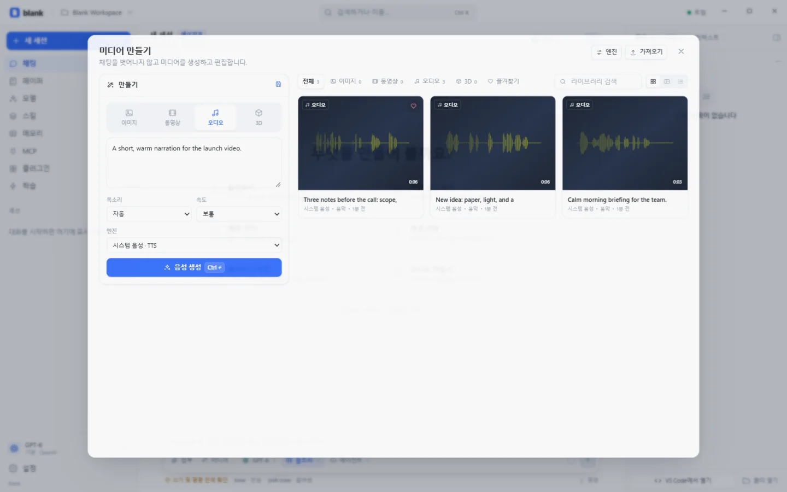

결과는 파일로 돌아옵니다.
보고서, 스크립트, 데이터 내보내기를 만들면 채팅에 파일 카드가 나타납니다. 필요한 부분만 정확히 고치고, 완성된 파일은 저장 대화상자로 바로 꺼냅니다.
LOCAL-FIRST AGENT HARNESS
모든 모델과 도구를 한 화면에. 대화로 파일을 만들고, 필요한 줄만 고치고, 완성된 결과는 파일 카드로 받습니다. 받아쓰기와 미디어, SSH, 에이전트 팀, Paper까지. 키와 세션은 이 기기에 남습니다.
무료 · 오픈 소스·MIT·계정 불필요

하나의 화면
모델과 도구, 파일과 미디어 사이를 오가지 않습니다. 필요한 것은 이미 대화 안에 있습니다.
보고서, 스크립트, 데이터 내보내기를 만들면 채팅에 파일 카드가 나타납니다. 필요한 부분만 정확히 고치고, 완성된 파일은 저장 대화상자로 바로 꺼냅니다.
Anthropic, OpenAI, Google, OpenRouter, xAI, DeepSeek, Mistral, Groq, Together, Cerebras, Ollama, LM Studio. OpenAI·Anthropic·Gemini 호환 엔드포인트도 추가할 수 있습니다.
프로바이더마다 여러 키를 이름과 함께 저장하세요. 인증 오류와 요청 한도에 자동으로 로테이션하고, 백업 모델로 전환합니다.
파일 읽기와 편집, 셸 명령, 승인 기반 SSH, 웹 검색, 커서가 보이는 데스크톱 제어까지. 위험한 작업만 확인하고, 규칙은 직접 정합니다.
입력창의 마이크를 누르고 말하면 OpenAI 호환 변환 엔드포인트가 텍스트로 옮깁니다. 같은 화면에서 이미지, 영상, 오디오, 3D 메시까지 만들고 고칩니다.
stdio와 HTTP MCP 서버, 병렬로 조사하는 서브에이전트, 재사용 가능한 스킬, 영구 메모리, 체크포인트, 컨텍스트 압축. 에이전트가 만든 페이지와 문서는 Paper 라이브러리에 모입니다.
파일 워크플로
전체를 다시 쓰지 않아도 됩니다. 정확한 문자열이나 줄 범위로 수정하고, 완성된 결과는 저장 가능한 파일 카드로 받습니다.
새 문서나 스크립트를 작업 공간에 씁니다. 전체를 새로 쓸 때만 write_file을 사용합니다.
old_string으로 정확히 바꾸거나, start_line과 end_line으로 필요한 줄만 교체합니다. 나머지 줄과 줄바꿈은 그대로 둡니다.
deliver_file이 채팅에 파일 카드를 띄웁니다. 카드에서 저장 대화상자를 열어 원하는 위치로 복사합니다.
50 MB까지 전달CRLF 그대로폴더는 제외저장 위치는 직접 선택
앱 내부
800px 읽기 폭, 조용한 플랜 레일, IDE처럼 움직이는 키보드. 빌드 단계도 숨은 번들도 없는 클래식 스크립트 인터페이스.

로컬 우선
blank는 계정 없이 열리고, 키 없이도 둘러볼 수 있습니다. 설정과 세션, 메모리와 파일은 이 기기의 일반 파일로 남습니다.
API 키는 ~/.blank의 설정 파일에만 저장되며 화면에는 마스킹된 상태만 보입니다.
모델 호출은 선택한 프로바이더로 이 컴퓨터에서 바로 나갑니다. 중간 서버가 없습니다.
세션, 미디어, Paper, 체크포인트는 로컬 라이브러리에 쌓이고 원하는 형식으로 내보냅니다.
설치
설치 파일(.exe). 빌드 도구도 패키지 관리자도 필요 없습니다.
설치 파일 받기 최신 릴리스디스크 이미지(.dmg). Applications로 끌어다 놓으세요.
디스크 이미지 받기 최신 릴리스 Intel Mac 빌드포터블 AppImage. 실행 권한만 주면 됩니다.
AppImage 받기 최신 릴리스질문
더 자세한 내용은 저장소 README에 있습니다.
아니요. blank는 키 없이도 열리고 채팅, 미디어, 페이퍼, 설정을 둘러볼 수 있습니다. 실제 모델 호출이 필요할 때 프로바이더를 연결하세요.
네. 모델이 작업 공간에 파일을 만들고 deliver_file을 호출하면 채팅에 파일 카드가 나타납니다. 카드의 저장 버튼으로 원하는 위치에 저장할 수 있습니다. 보고서, 스크립트, 데이터 내보내기에 모두 쓸 수 있습니다.
네. edit_file은 정확한 문자열 치환과 1부터 시작하는 줄 범위 교체를 모두 지원합니다. 지정한 줄만 바뀌고 나머지 내용과 CRLF 줄바꿈은 유지됩니다. 수정 전에 체크포인트가 생겨 되돌릴 수 있습니다.
입력창의 마이크를 누르면 그동안만 녹음합니다. 녹음을 멈추면 설정에서 고른 OpenAI 호환 프로바이더의 /audio/transcriptions 엔드포인트로 한 번 전송하고, 텍스트를 입력창에 넣습니다. 녹음은 디스크에 저장되지 않습니다.
모든 것이 ~/.blank 아래의 일반 파일입니다. 설정, 세션, 메모리, 스킬, 체크포인트, 미디어가 여기에 있습니다. BLANK_HOME으로 위치를 옮길 수 있습니다. 요청은 당신의 컴퓨터에서 선택한 프로바이더로 바로 전송됩니다.
아니요. 직접 켜야 합니다. 원격 제어를 시작하면 새 페어링 토큰이 발급되고, LAN 접근을 명시적으로 허용하지 않는 한 루프백에만 바인딩됩니다.
이 페이지나 GitHub Releases에서 최신 빌드를 설치하세요. 새 설치 파일이 기존 앱을 대체하며, ~/.blank 데이터는 그대로 남습니다.
네. blank는 MIT 라이선스입니다. 렌더러는 읽기 쉬운 클래식 스크립트이고, 코어는 순수 Node.js입니다.